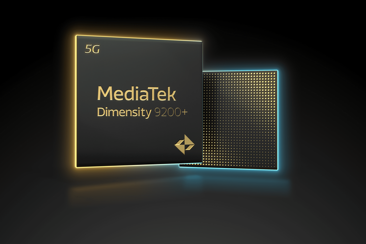

Chip Mediatek Dimensity 9200+ Meluncur, Saingi Snapdragon 8 Gen 2 for Galaxy

m - Mediatek resmi meluncurkan system on chip (SoC) Dimensity 9200+,
penerus Dimensity 9200 yang dirilis tahun lalu, namun dengan peningkatan
kecepatan clock pada CPU dan GPU. Chipset terbaru ini menawarkan
keunggulan hemat daya untuk masa pakai baterai smartphone yang lebih
lama, dan pengalaman nge-game yang lebih baik lagi.
Dengan kecepatan clock lebih tinggi dibanding seri sebelumnya (Dimensity
9200), Dimensity 9200+ mengombinasikan satu ultra-core Arm Cortex-X3
yang beroperasi hingga 3,35 Ghz (sebelumnya 3,05 GHz) , tiga super-core
Arm Cortex-A715 yang berjalan hingga 3,0 Ghz (sebelumnya 2,85 GHz), dan
empat core hemat daya Arm Cortex-A510 pada 2,0 Ghz. Kecepatan clock 3,35
GHz itu hampir identik dengan kecepatan clock puncak 3,36 GHz milik
prosesor di chip Snapdragon 8 Gen 2 for Galaxy (dibuat khusus untuk
Samsung Galaxy S23). Baca juga: Ini Chip MediaTek yang Bisa Taklukan
Snapdragon 8 Gen 2 Untuk mendukung Dimensity 9200+ dalam bermain game
dan aplikasi komputasi secara intensif, MediaTek meningkatkan GPU Arm
Immortalis-G715 cipset sebesar 17 persen.
“Kami terus meningkatkan standar kinerja andalan dan hemat daya dengan
Dimensity 9200+, memastikan para produsen perangkat memiliki akses ke
fitur-fitur mobile gaming tercanggih yang tersedia saat ini,” kata Dr.
Yenchi Lee, Deputy General Manager of MediaTek’s Wireless Communications
Business Unit. “Dengan ray tracing yang lebih cepat dan game play yang
lancar pada frame rate tinggi, dikombinasikan teknologi hemat daya, Anda
dapat merasakan visual luar biasa, efek epik, dan masa pakai baterai
yang lebih lama,” lanjut Lee dalam keterangan tertulis yang diterima
KompasTekno, Kamis